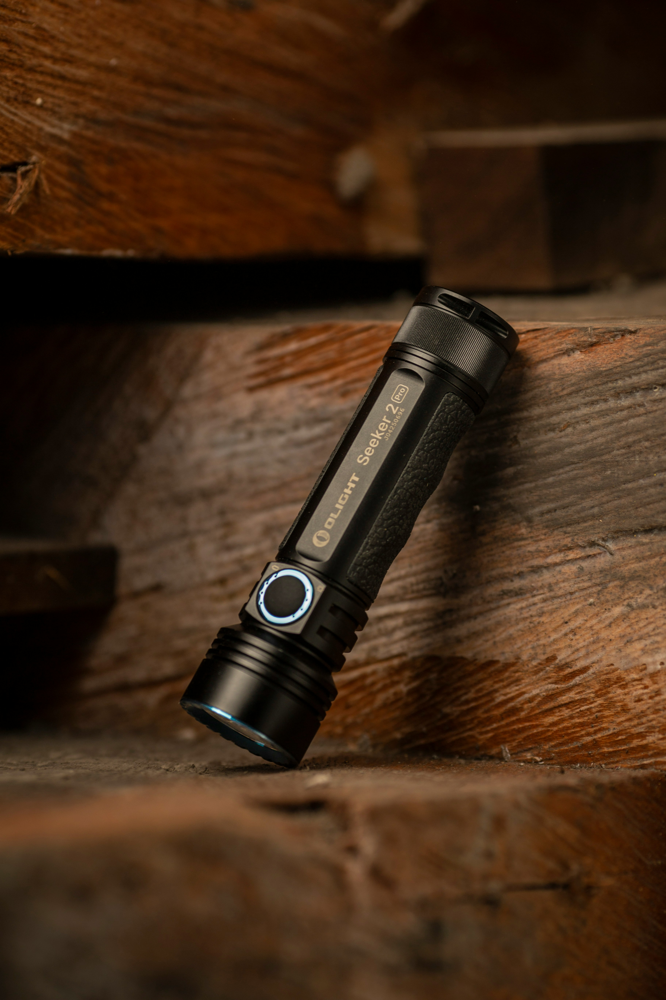

Parapluie Soalire
Le Parapluie Solaire
1971
Odile Tremblay
Un parapluie muni d’un capteur : il ne s’ouvre que lorsqu’il fait soleil. Échec : commercialisé au Québec, en novembre
4
Fourchette Sonore
La Fourchette Sonore
1988
Réjean Béliveau
Elle émet un bip strident dès que vous mangez trop vite. Échec : elle bipait sans arrêt. Onze plaintes de voisins.
213
Réveil Aquatique
Le Grille-pain à Cravates
1994
Institut Lavoie
Repasse la cravate en la faisant légèrement griller. Échec : 312 cravates carbonisées avant le rappel.
312
Grille-pain à Cravates
Les Souliers à Ressort
2003
Manon Girard
Se lacent seuls grâce à deux ressorts industriels. Échec : projetaient l’usager vers l’avant sur environ deux mètres.
58
Chaise Auto-pliante
Le Réveil Aquatique
1979
Coop. Saint-Elzéar
Vous réveille en versant un verre d’eau froide. Échec : fonctionnait parfaitement. C’était le problème.
6
Souliers à Ressort
Le Téléphone à Deux Écouteurs
1962
Bureau des Idées
Pour écouter la conversation à deux. Échec : le fil entre les deux écouteurs mesurait 40 cm.
Téléphone à Deux Écouteurs
La Chaise Auto-pliant
2008
Atelier Roy & Filses
Se replie toute seule au bout de vingt minutes, pour vous encourager à bouger. Échec : elle ne prévenait pas.
77
Crayon Infini
Le Crayon Infini
1955
Ateliers Bergeron
Une mine de quatre mètres enroulée dans le corps du crayon. Échec : le crayon pesait 1,8 kg.
910

Lampe Silencieuse
La Lampe de Poche Silencieuse
1998.
Anonyme
Une lampe de poche qui ne fait aucun bruit. Échec : personne n’a jamais compris quel problème elle résolvait.
0